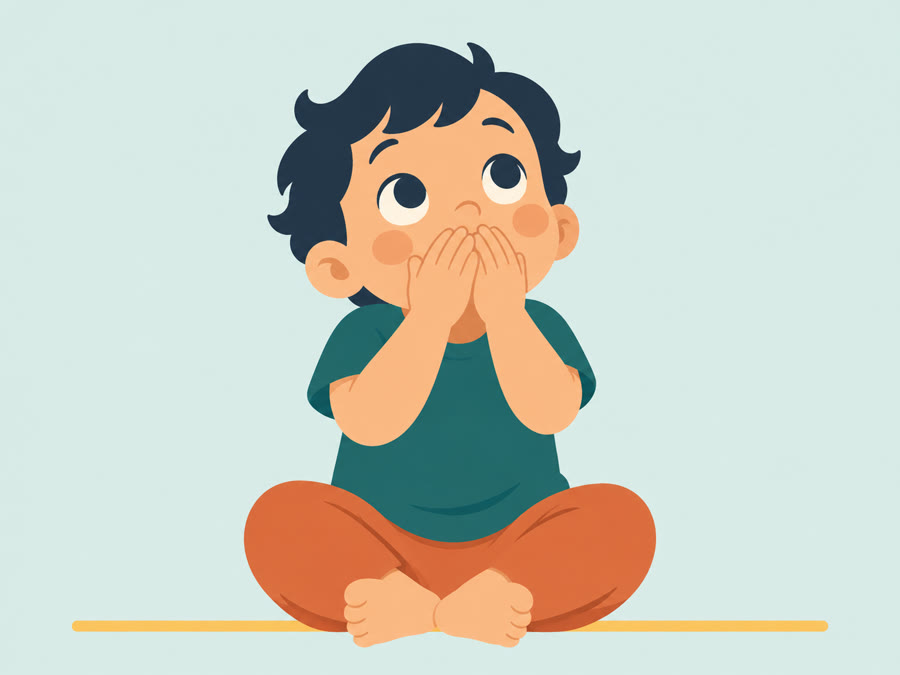
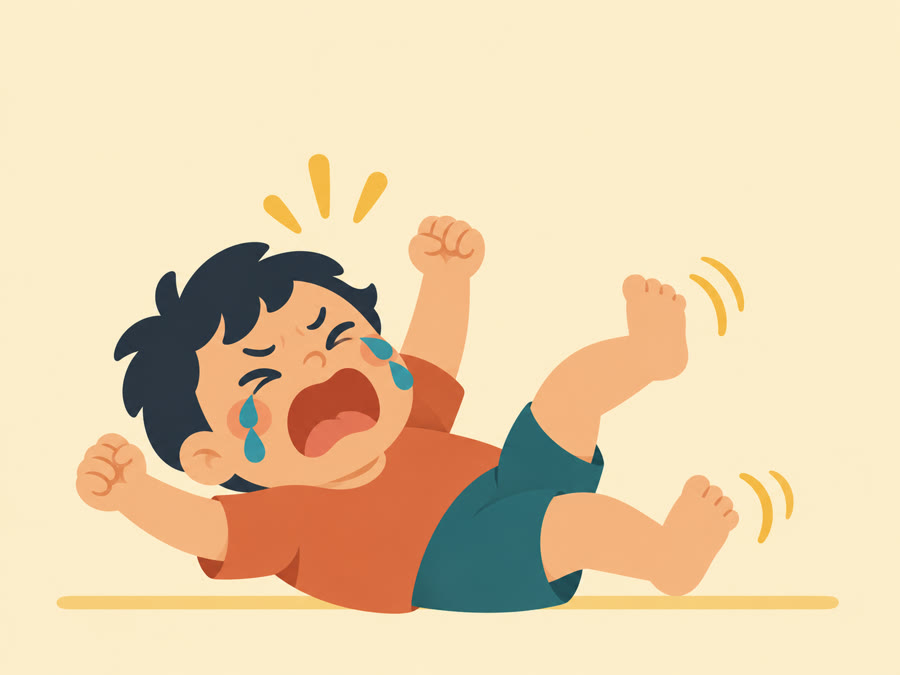
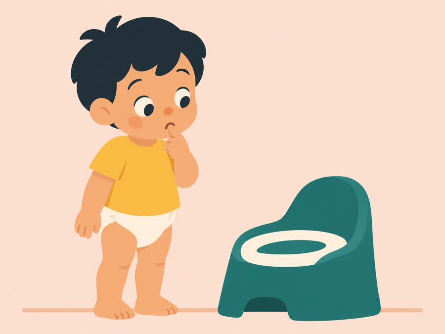

Помогаю ребёнку заговорить, наладить поведение и освоить горшок
Спокойно, по шагам и без давления. Разбираемся, почему так происходит, и учим родителей, что делать каждый день. Онлайн, из любой страны.
Узнаёте своего ребёнка?
Выберите ситуацию, и я покажу, как мы с ней работаем.

Ребёнок не говорит или говорит мало
- Нет слов к двум годам, только звуки и жесты
- Тянет за руку вместо просьбы
- Речь есть, но её не понимают

Истерики, отказы, агрессия
- Кричит, бросает вещи, падает на пол
- Не слушается и не переключается
- Вы пробовали разное, а лучше не стало

Не ходит на горшок
- В 3-4 года всё ещё в подгузнике
- Прячется, какает стоя или терпит по 3-4 дня
- Боится горшка или унитаза
Не нашли свою ситуацию? Индивидуальная работа или напишите мне, подскажу, с чего начать.
Упражнения для запуска речи и развития ребёнка
Игровые упражнения по методикам логопедии и ABA: звукоподражание, слоги, дыхание, понимание, просьба, рассказ. Подходят для онлайн-занятий со специалистом и для самостоятельной работы с ребёнком. У каждого есть подсказки: что спросить, как помочь и что хвалить.
 Звукоподражание
Звукоподражание Речевое дыхание
Речевое дыхание Память и внимание
Память и вниманиеРебёнок учится каждый день, а я направляю
Чем чаще ребёнок практикует навык в обычной жизни, тем быстрее результат. Поэтому ведущая роль у родителя: я объясняю, показываю и корректирую план.
Вы пишете
Коротко о ребёнке и запросе. Я отвечаю и предлагаю время.
Консультация
Разбираем, что происходит до, во время и после, что уже пробовали.
План на неделю
Цель, шаги и упражнения. Понятно, что делать и как увидеть результат.
Сопровождение
Обратная связь, коррекция плана, закрепление навыка.

Выберите формат
Можно начать с консультации, а потом решить, нужно ли сопровождение.
Стоимость консультаций и сопровождения Александра сообщает при записи. Оплата из других стран обсуждается индивидуально.
На чём строится работа
Здесь будет отзыв родителя: что было до работы и что изменилось.Имя, возраст ребёнка
Здесь будет отзыв родителя: конкретный результат, например первые слова.Имя, возраст ребёнка
Здесь будет кейс «было и стало» с согласия семьи.Направление работы
Образование, сертификаты и отзывы из Instagram (Отзывы и кейсы, Мои ученицы) Александра добавит отдельно.
Александра Карачинцева
Психолог, поведенческий аналитик (ABA), специалист по запуску речи. Помогаю родителям понять ребёнка и дать ему навыки, которых не хватает: говорить, ждать, просить, ходить на горшок. Работаю вместе с командой специалистов, в том числе с нейропсихологом.
Что обычно спрашивают
Подходит ли это, если у ребёнка нет диагноза?
Да. Диагноз для обращения не нужен: достаточно трудности, например ребёнок не говорит, кричит, отказывается или боится горшка.
Сколько длится работа?
Зависит от запроса и возраста. На консультации я называю ориентир и первые шаги, чтобы вы видели результат.
Нужен ли ребёнок на консультации?
Чаще всего основная работа идёт с родителями: они рядом с ребёнком каждый день. Формат подбираем под запрос.
Можно ли записаться из другой страны?
Да, работаю онлайн. Способ оплаты (например, PayPal) и валюта обсуждаются индивидуально.
Как проходит оплата?
Пока запись и оплата через личные сообщения. Онлайн-оплата через ЮKassa появится позже.
Запись за три шага
Другие способы связи и шаблон сообщения:
ВКонтакте открывается без VPN, для Telegram и Instagram он может понадобиться. Запись и оплата пока проходят через личные сообщения. Если вы за границей, способ оплаты (например, PayPal) и валюта обсуждаются индивидуально.